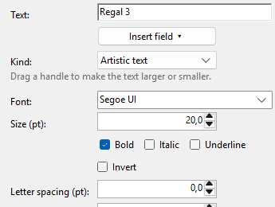
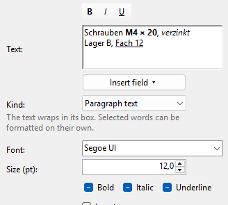

Artistic and paragraph text
A text is either an artistic text (one line, the box follows the text) or a paragraph text (several lines that wrap in their box). You set everything else in the settings on the right.
-
Artistic text
The Artistic text tool or Insert > Artistic text. The box always fits the text. Drag a handle to make the text larger or smaller; the opposite side stays where it is. Or type the Size (pt).
Enter does nothing here; pasted line breaks become spaces.

-
Paragraph text
The Paragraph text tool or Insert > Paragraph text. You set the box with the handles; the text wraps at its edge at its font size. A word longer than a line breaks between letters.
You also get the alignment of the lines (Left, Centre, Right) and the Line spacing (0.5 to 3 times).
A text that doesn't fit the box is cut off at the box. On the screen the box then gets a red edge, and a red note appears on the right.
-
Words in their own format
In a paragraph text single words can be bold, italic, underlined, in another font or size. Select them in the Text box and click B, I or U above it, or change Font and Size (pt). A line below the box says what the settings apply to.

With nothing selected, B, I and U apply to what you type next. When the text box isn't active, the settings apply to the whole text. Where the selected words differ, the setting stays blank or shows ■.
Pasted text takes the format at the cursor. An artistic text has one format for the whole text: switching a paragraph text with word formats to it asks first and keeps the first word's format.
-
Switch between the two
Kind switches between Artistic text and Paragraph text. A paragraph text becomes one line (line breaks become spaces), an artistic text becomes a paragraph text in a box around its text.
-
Font
Font, Size (pt), Bold, Italic, Underline and Letter spacing (pt) from −5 to +20 work for both kinds. Invert prints the text white on black: White on black.
-
Date and time
Insert field ▾ below the text adds a field that is filled in whenever the label is shown or printed:
{date}- today's date
{date+30}- the date in 30 days;
{date-1}is yesterday {time}- the time
{date:yyyy-MM-dd}- with a format of your own after the colon, e.g.
{date+7:dd.MM.yy}or{time:HH:mm}
Without a format, the date and time look as in your Windows settings.
{{and}}print single braces. Example for a freezer label: "Frozen {date} – use by {date+90}".Fields also work in the content of barcodes and QR codes.